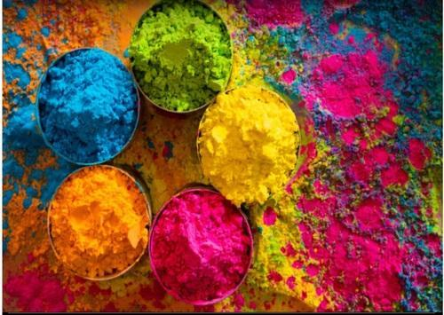

HOLI

Holi ( /ˈhoʊliː/) is a popular ancient Indian festival, also known as the "Festival of Love", the "Festival of Colours" and the "Festival of Spring".[1][8][9] The festival celebrates the eternal and divine love of Radha Krishna.[10][11] It also signifies the triumph of good over the evil,[12][13] as it celebrates the victory of Vishnu as Narasimha Narayana over Hiranyakashipu.[14][15] It originated and is predominantly celebrated in the Indian subcontinent but has also spread to other regions of Asia and parts of the Western world through the Indian diaspora. Holi celebrates the arrival of spring, the end of winter, the blossoming of love and for many, it is a festive day to meet others, play and laugh, forget and forgive, and repair broken relationships.[16][17] The festival also celebrates the beginning of a good spring harvest season.[16][17] It lasts for a night and a day, starting on the evening of the Purnima (Full Moon Day) falling in the Hindu calendar month of Phalguna, which falls around the middle of March in the Gregorian calendar. The first evening is known as Holika Dahan (burning of Demon Holika) or Chhoti Holi and the following day as Holi, Rangwali Holi, Dol Purnima, Dhuleti, Dhulandi,[18] Ukuli, Manjal Kuli,[19] Yaosang, Shigmo[20] or Phagwah,[21] Jajiri.[22]